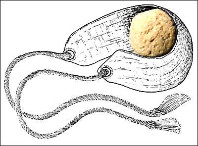
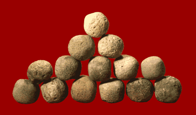

The Challenge -
Sling stones

Sling stones were found all over the site of Lachish. They were most commonly made of flint. This is not a local stone so it must have been brought to the site, perhaps by the Assyrians when King Sennacherib's army laid siege to and captured Lachish in 701 B.C.

|
|